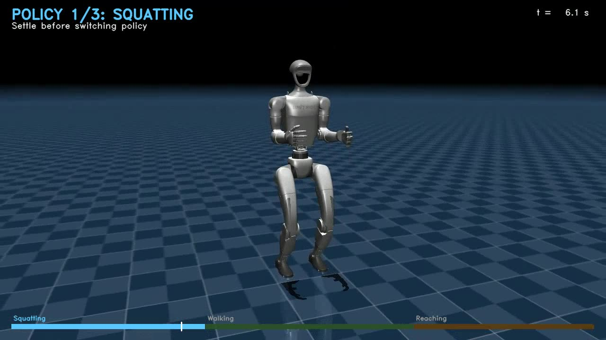

Unitree G1 多技能全身控制
基于强化学习实现行走、下蹲、双臂到达与单臂到达等多技能控制，并完成多技能在线切换、Sim-to-Sim 验证及 Unitree G1 真机闭环部署。
项目 01
神经策略优化与上下肢解耦控制
通过仿真与真机实验验证协同操作、转向行为以及上下肢解耦框架下的全身控制性能。
01
仿真箱体搬运
展示箱体抓取、搬运与转移过程中的协调全身控制。
仿真实验箱体抓取、搬运与转移
02
真机箱体搬运
真机 · 外接计算机带来的大负载扰动
真机实验全身箱体搬运与转移
03
左右转向对称泛化
策略仅使用左转动作进行训练，右转作为镜像方向的分布外动作进行评估，用于验证策略对左右对称结构的泛化能力。
左转 · 训练动作右转 · 分布外动作（OOD）
04
左右镜像转向一致性
进一步展示左右转向命令下稳定且一致的镜像运动行为，用于定性验证动作对称性。
对称性验证左右镜像转向行为
项目 02
Unitree G1 多技能全身控制
展示多技能全身控制、到达控制以及视觉引导操作的仿真与真机结果。
01
视觉引导的瓶体抓取
视觉目标定位与单臂到达策略联动，实现真机目标引导与闭环抓取。
真机实验视觉引导瓶体抓取
02
多技能策略切换
仿真：下蹲 → 行走 → 到达；真机：下蹲 ↔ 行走。
仿真实验下蹲 → 行走 → 到达
真机实验下蹲 ↔ 行走
03
独立到达控制
分别在仿真与真机环境中验证到达策略的独立控制效果。
仿真实验到达策略
真机实验到达策略
人机协作
进一步拓展全身控制方法，使人形机器人能够面向人与机器人之间的物理交互与协同任务。